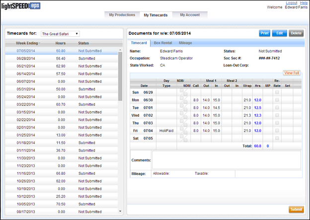

The following columns are present in the timecard list. You may sort the list by any of these columns.
· Week Ending: The week ending date for the timecard.
· Hours: The number of hours reported on the timecard.
· Status: The status of the timecard (i.e. Submitted, Approved, etc.).
Select a timecard from the list to view it onscreen.
Lightspeed offers two timecards views - a Basic Timecard and a Full Timecard. By default you are shown the basic view.
Basic Timecard View

The basic view contains a timecard list on the left and a view of submitted hours and comments on the right. You may switch between the Basic and Full views by clicking on the View Full or View Basic button above the submitted hours portion of the timecard.
Related Topics